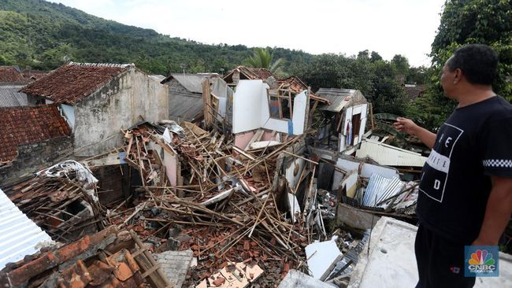

Gempa Bumi Guncang Jawa Barat

Kepala Badan Meteorologi, Klimatologi, dan Geofisika (BMKG), Dwikorita Karnawati memberi peringatan potensi bencana susulan kepada masyarakat pasca gempa 6,2 Skala Richter (SR) di Garut, Sabtu (27/4/2024) lalu. Dalam pernyataan resminya, Dwikorita meminta masyarakat Sukabumi, Tasikmalaya, Bandung, Garut, dan sekitarnya untuk waspada terhadap potensi longsor dan banjir bandang usai gempa tektonik yang berpusat di Kabupaten Garut, Jawa Barat. "Kami mengimbau masyarakat untuk tenang. Namun, tetap waspada apabila turun hujan, baik dengan intensitas sedang hingga lebat," kata Dwikorita, Minggu (28/4/2024). "Terutama masyarakat yang bertempat tinggal di lereng-lereng bukit, perbukitan, gunung, ataupun pegunungan dan daerah aliran sungai karena berpotensi terjadi longsor dan banjir bandang," lanjutnya. Menurut Dwikorita, potensi bencana susulan ini bisa muncul karena getaran gempa dapat memicu keretakan atau membuat lereng-lereng lebih rapuh. Jika terguyur hujan, air hujan yang meresap dikhawatirkan akan mendorong massa tanah dan/atau batuan menjadi longsor. Selain itu, curah hujan dengan intensitas sedang hingga lebat juga dapat mengakibatkan banjir bandang yang membawa material tanah, bebatuan, dan pepohonan. Sebelumnya, Kabupaten Garut dan sekitarnya diguncang gempa berkekuatan 6,2 SR, Sabtu (27/4/2024) pukul 23.29 WIB. BMKG menyebutkan bahwa episenter gempa terletak di koordinat 8,39° LS ; 107,11° BT atau berlokasi di laut pada jarak 156 Km arah Barat Daya Kab. Garut, Jawa Barat pada kedalaman 70 km. Gempa yang turut dirasakan di Sukabumi, Tasikmalaya, Bandung, Garut, Tangerang, Tangerang Selatan, Bogor, hingga Jakarta ini disebut tidak berpotensi tsunami.